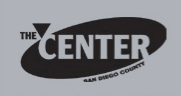

The San Diego Lesbian, Gay, Bisexual Transgender Community Center

Website:
http://www.thecentersd.org/ Location:
San Diego, CA
The mission of The San Diego LGBT Community Center is to enhance and sustain the health and well-being of the lesbian, gay, bisexual, transgender and HIV communities by providing activities, programs, and services that:
Create community,
Empower community members,
Provide essential resources,
Advocate for civil and human rights, and
Embrace, promote and support our cultural diversity.
The Center houses more than 50 programs, projects and services that reach out to the LGBT, HIV/AIDS and allied communities. We provide direct program services to the many different facets of the LGBT community, including youth, seniors, families, LGBT Latino community members and their families, and those struggling with HIV. In 2008 The Center served more than 25,000 San Diego community members, and through its events, activities and advocacy, touched the lives of thousands more.
Supported Projects
CTC Support and Program Building
Andrea Callopy
9/2006 — 9/2007
Our VISTAs primary role was to enable The Center’s 3 community-based CTCs to meet the specific needs of disadvantaged clients by providing effective volunteer resources.
Andrea has excelled. She has done a wonderful job coordinating our volunteer resources for our CTCs, ensuring our centers are well staffed and open to the public. She has improved our technical capacity by creating a shared calendar in outlook which enables the organization staff to access CTC hours and volunteer information. In order to better support and recognize our volunteers, Andrea has implemented a monthly newsletter that goes out to the public and also volunteer appreciation week in April. In collaboration with the volunteer coordinator Andrea developed a recruitment plan for youth, LEP adults and seniors, which has greatly increased the number of volunteers at our sites and exceeded our recruiting goals.
Andrea has been instrumental in organizing and overseeing our Community Technology Centers. She is always well organized and has developed many of the operating procedures that enables us to make the CTC’s available to the public. In addition she has a lot of enthusiasm for the project and is always willing to help in whatever way she can.
CTC Development
Morgan Sully
9/2005 — 9/2006
Develop capacity of our two community technology centers focusing on youth digital media programs, through volunteer recruitment, digital media curriculum,and volunteer training. Establish an online repository (knowledge base) for both internal documentation as well as resources shared by the community. San Diego Community Technology Coalition. Improve the quality of workshops, trainings, and resources offered to CTCs, and implementing more rigorous evaluation measures. Develop, in conjunction with the SDCTC directors and advisory council, three proposals for continued funding of SDCTC activities.
Morgan created a digital media committee composed of diverse community members, planned 3 large digital storytelling nights cumulatively drawing over 300 attendees, and created a digital toolkit which includes training on how to create digital stories.
Morgan helped the San Diego Community Technology Coalition move from a very static website, to a drupal/civic space website which allows for staff to enter data in the site and for community members to search a GIS based maps to find CTCs near them. He also helped to establish many community collaborations, in particular where SDCTC is now placed to help San Diego build it’s capacity for free wi-fi access in our underserved communities.
Morgan also helped set-up a new computer lab at our Youth Housing Project which serves 23 formerly homeless youth.
For SDCTC, Morgan brought together some of the more cutting edge technology advocates to our Annual Symposium and to several workshops put on throughout the year. He helped open the eyes of other Community Technology Centers to how they could use technology to advocate for their clients.
Related Content
None created yet!